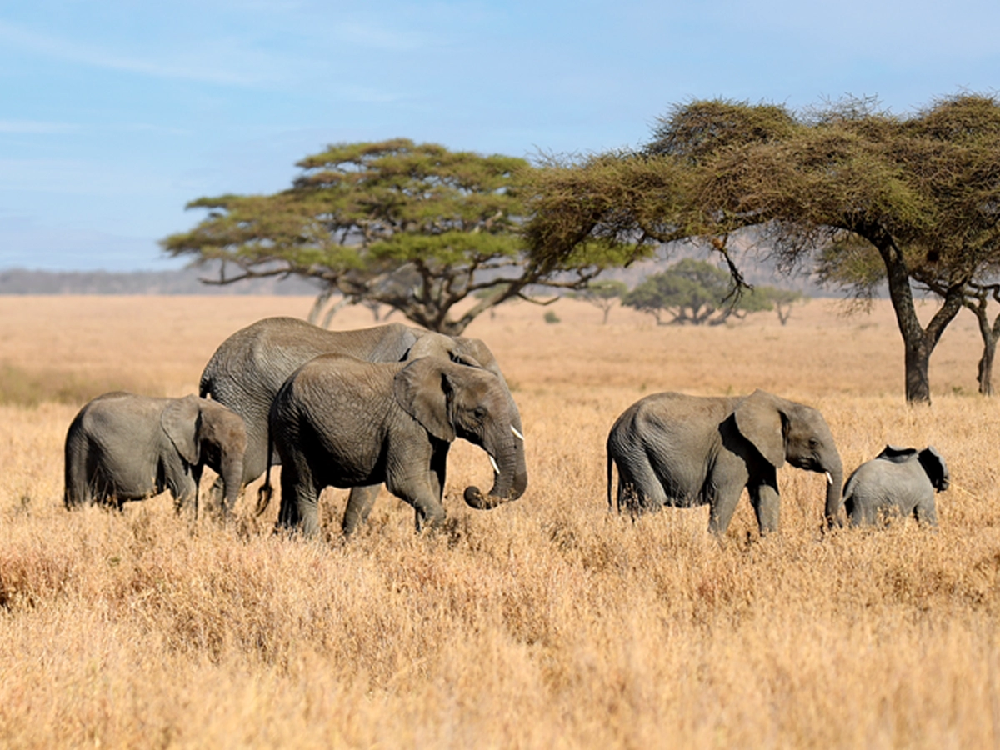

Local Expertise
Journeys planned by a Tanzanian team that knows the parks and routes.
Sun Journey · From Sunrise to Starlight
Safaris across the northern and southern circuits, Kilimanjaro climbs, Zanzibar holidays and authentic cultural experiences. Tell us what you dream of seeing and we will shape the journey.

About Us
We are a Tanzanian safari company welcoming international and domestic travellers. From the Serengeti plains to the forests of Udzungwa, we plan journeys around your interests, dates and pace.
Every itinerary, inclusion and price is confirmed with our team before you book, so you always know what to expect.

Safari Packages
Suggested durations only. Ask us on WhatsApp for any other length. Prices are on request until confirmed for your dates.
Explore Destinations
Northern Circuit
The classic wildlife route of Tanzania.
Southern Circuit
Four parks, four separate safaris, each with its own booking.
Kilimanjaro Adventures
Six routes with suggested durations. Longer routes usually allow better acclimatisation.
Zanzibar Experiences
Cultural & Adventure
Why Travel With Us
Journeys planned by a Tanzanian team that knows the parks and routes.
Suggested durations are a starting point. Ask for the length you need.
Message us directly with a ready-made enquiry for any package.
Itinerary, inclusions and price are confirmed with you before booking.
Gallery
FAQ
Press any Book button. WhatsApp opens with a message naming your package. Nothing is booked until our team confirms with you.
Prices depend on season, group size, accommodation and inclusions. Ask for a quote on WhatsApp.
Yes. Durations shown are suggestions and can be adjusted.
Tanzania offers wildlife and adventures all year. The best period varies by park and activity, so ask us for advice on your dates.
Yes, we welcome visitors from Tanzania, East Africa and the world.
Contact Us
Bookings are made through WhatsApp. The button opens a ready-to-send message.
WhatsApp: +255 685 645 498